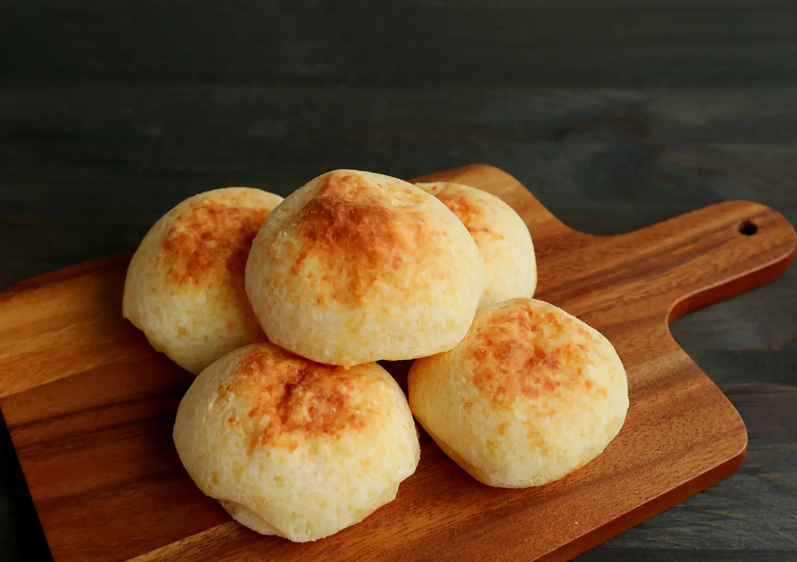

Homepage
Pao de Queijo

Description
Pão de Queijo is a traditional Brazilian cheese bread made from tapioca flour and grated cheese, typically Parmesan. These small, round rolls are known for their chewy texture and cheesy flavor, with a crisp exterior and soft, airy interior. Naturally gluten-free, pão de queijo is commonly enjoyed for breakfast or as a snack throughout Brazil, often served warm straight from the oven.
Ingredients
- Tapioca Flour: 2 cups
- Milk: 1 cup
- Oil (vegetable or olive): 1/2 cup
- Eggs: 2
- Grated Parmesan Cheese: 1 cup
- Salt: 1 tsp
Steps
- Preheat oven to 180°C (350°F).
- In a saucepan, heat milk, oil, and salt until just boiling.
- Pour over tapioca flour in a bowl and mix well.
- Let it cool slightly, then add eggs one at a time, mixing well.
- Stir in the cheese until evenly combined.
- Shape into small balls and place on a baking sheet.
- Bake for 20–25 minutes until golden and puffed.